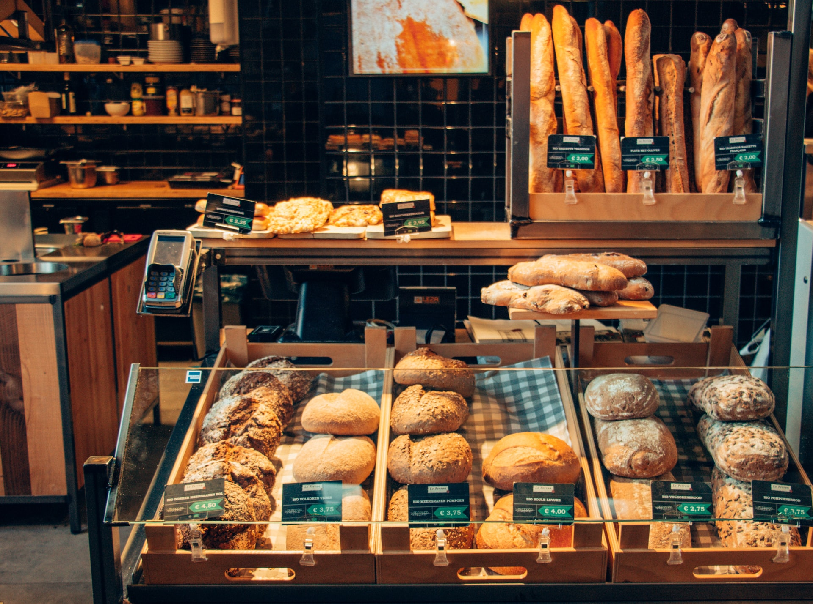
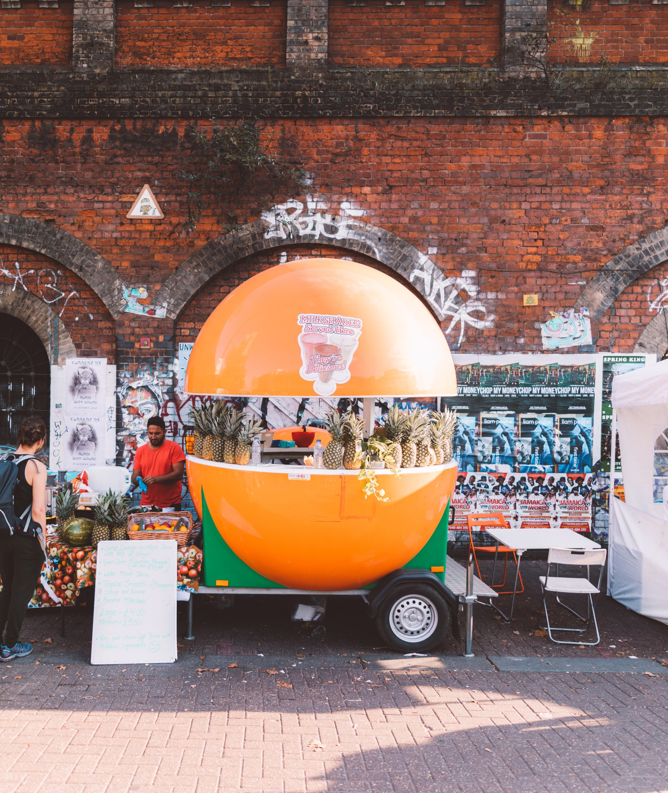
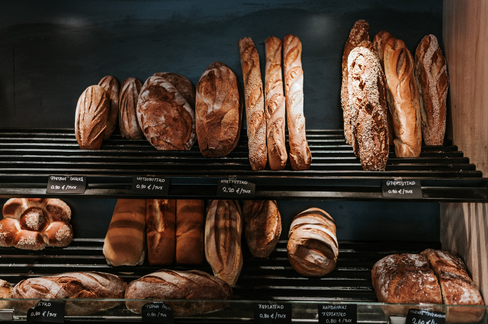
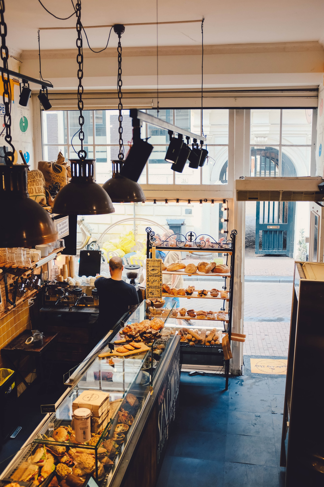
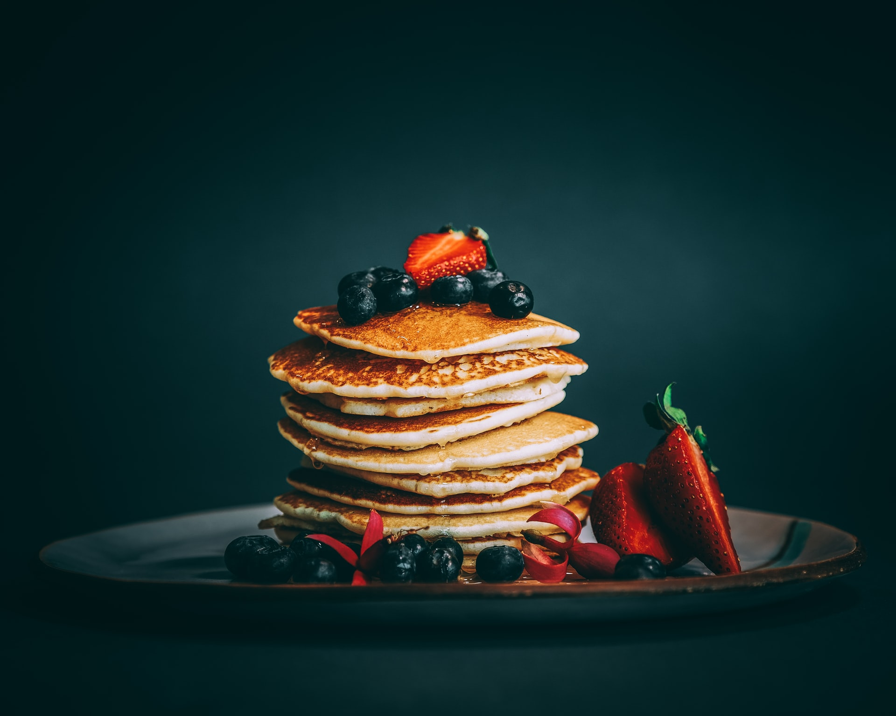

What we offer

We opened in may 2010, and our bread has been loved in the neighborhood. we use only selected ingredients and be committed to trustworthy products.
Croissants are our flagship product, which made from french butter, freshly milled organic flours, and long fermentation period.
To serve a more delightful experince to our customers, we opened a restaurant next to the bakery in July 2018. Our meals are inspired by the seasons and use freshlyfruits and vegetables fresh from the farmer's market.
    